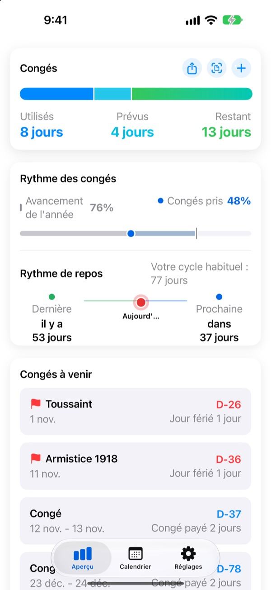
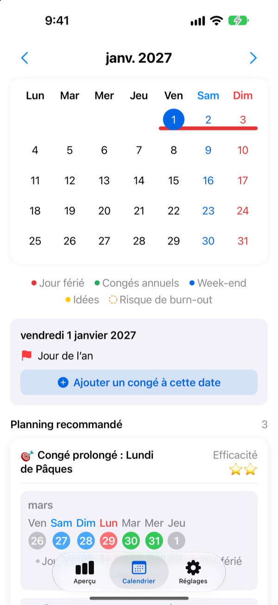
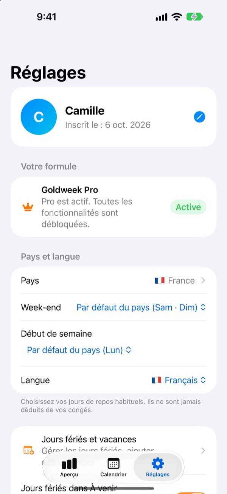

Peu de jours posés,
de vrais ponts
Goldweek associe jours fériés et week-ends et vous montre précisément quels jours poser pour profiter de la plus longue pause. Fini de feuilleter le calendrier en comptant sur vos doigts.
Téléchargement gratuit. Le suivi des congés et les suggestions restent gratuits.
Jusqu’où vont vos congés ?
Choisissez combien de jours vous pouvez poser. Vous verrez les plus longues pauses qu’ils permettent autour des prochains jours fériés.
Marre de compter les jours sur le calendrier ?
Le jeudi est férié : faut-il poser le vendredi ? Ou garder ce jour pour le pont du mois prochain ? À force de tourner les pages, on finit par poser n’importe quel jour, et en décembre les congés restants s’envolent. Goldweek fait le calcul et vous montre les jours qui font durer vos congés le plus longtemps.
Vos congés d’un coup d’œil
Total, posés, restants : tout tient sur un écran. Vous voyez aussi où en est l’année à côté de vos congés déjà utilisés, pour savoir tout de suite si vous en mettez trop de côté.
Vos jours restants et vos prochains congés s’affichent sur l’écran d’accueil grâce à un widget.

Posez vos congés depuis le calendrier
Jours fériés, congés et ponts suggérés apparaissent en couleur dans le calendrier. Touchez une date pour ajouter ou modifier un congé, y compris une demi-journée, un quart de journée ou quelques heures.
Vous pouvez aussi importer vos anciens congés d’un coup à partir d’une photo de votre écran RH.

Votre pays, votre rythme
Les jours fériés de 42 pays, de la France à la Belgique et la Suisse jusqu’à l’Asie et aux Amériques. Là où ils varient selon la région, choisissez la vôtre. Votre pays n’y est pas ? Ajoutez vos propres jours fériés.
Vous réglez aussi vos jours de week-end, le premier jour de la semaine et votre rythme : fixe, temps partiel ou travail posté.

Trois étapes pour commencer
- 1
Indiquez où vous travaillez
Au premier lancement, choisissez votre pays et votre nombre de jours de congés par an.
- 2
Choisissez une suggestion
Retrouvez les ponts suggérés dans l’onglet Calendrier et ajoutez ceux qui vous plaisent.
- 3
Notez vos congés
Touchez une date, ou importez vos anciens congés depuis une photo.
Comment on compte
- Journée
- 1 jour décompté
- Demi-journée
- 0,5 jour
- Quart de journée
- 0,25 jour
- Heures
- Selon vos heures de travail ce jour-là
- Arrêt maladie, congé exceptionnel, déplacement
- Non décomptés de vos congés
- Congés bonus
- Jours en plus comme les récupérations, suivis à part avec une date d’expiration (Pro)
Vous pouvez changer à tout moment votre total de congés annuels et le mois où démarre votre année de congés dans les Réglages.
Bien se reposer, c’est gratuit. La planification, c’est Plus et Pro.
Gratuit
- Journées, demi-journées, quarts et heures, avec vos congés restants
- Jours fériés de 42 pays, vos propres fériés et vacances scolaires
- Toutes les suggestions de l’année, jusqu’à 3 ajoutées
- Conseils d’espacement des pauses, rappels et widget
- Ajout de congés par photo
- Sauvegarde iCloud et calendrier partagé en famille
Plus et Pro
- Plus : Planificateur annuel optimal
- Plus : Suggestions illimitées, y compris l’an dernier et l’an prochain
- Plus : Envoi des congés vers votre app Calendrier
- Pro : Tout Plus, congés bonus, plafonds annuels et report par type
- Pro : Import du calendrier scolaire et détection automatique du calendrier
- Pro : Repos en famille et anniversaires familiaux
Chaque formule existe en abonnement annuel ou en achat unique à vie.
Les abonnements annuels se renouvellent automatiquement s’ils ne sont pas résiliés au moins 24 heures avant la fin de la période. Gérez-les à tout moment dans Réglages > Compte Apple > Abonnements.
Questions fréquentes
Mon solde de congés ne semble pas juste.
Vérifiez dans les Réglages le mois de début de votre année de congés et votre total annuel. Les demi-journées (0,5) et quarts de journée (0,25) sont décomptés automatiquement, et les types qui ne comptent pas, comme les arrêts maladie, congés exceptionnels ou déplacements, ne changent pas le solde. Si ça ne colle toujours pas, écrivez-nous.
Mon congé n’apparaît pas dans le calendrier.
Les congés annulés ne s’affichent pas dans le calendrier. Vérifiez le statut de l’entrée dans Gestion des congés. Une mise à jour vers la dernière version peut aussi aider.
Comment ajouter des congés bonus ?
Touchez + dans l’onglet Aperçu pour ouvrir Gestion des congés, puis utilisez la section Congés bonus en bas. Choisissez un type (récupération, congé de récompense, congé de ressourcement…), le nombre de jours et, si vous voulez, une date d’expiration. Les congés bonus sont suivis à part de vos congés annuels.
J’ai payé, mais rien n’est débloqué.
Touchez Restaurer l’achat en bas de l’onglet Réglages. Votre achat est restauré avec le compte Apple connecté à l’App Store. Si ça ne marche pas, écrivez-nous.
Vais-je perdre mes données si je supprime l’app ?
Vos données sont stockées sur l’appareil : supprimer l’app les efface définitivement. Activez la sauvegarde iCloud pour garder une copie à restaurer plus tard.
Puis-je ajouter mes propres jours fériés ou en masquer ?
Oui. Dans Jours fériés et vacances, dans les Réglages, vous pouvez ajouter vos propres jours fériés ou masquer ceux proposés par défaut.
Quels pays sont pris en charge ?
Goldweek connaît les jours fériés de 42 pays. Choisissez votre pays (et votre région, là où les fériés varient) dans les Réglages, et le calendrier se met à jour aussitôt. Si le vôtre manque, ajoutez ses jours fériés vous-même ou demandez-le via le feedback dans l’app.
Où sont stockées mes données ?
Ce que vous saisissez reste sur votre appareil ou dans votre propre iCloud. Nous recevons uniquement des statistiques d’usage anonymes, des rapports de plantage anonymes et les retours que vous choisissez d’envoyer.
Pour tout ce qui n’est pas couvert ci-dessus, une idée ou un bug, écrivez à leeo@kakao.com. Nous répondons en général sous un ou deux jours ouvrés.